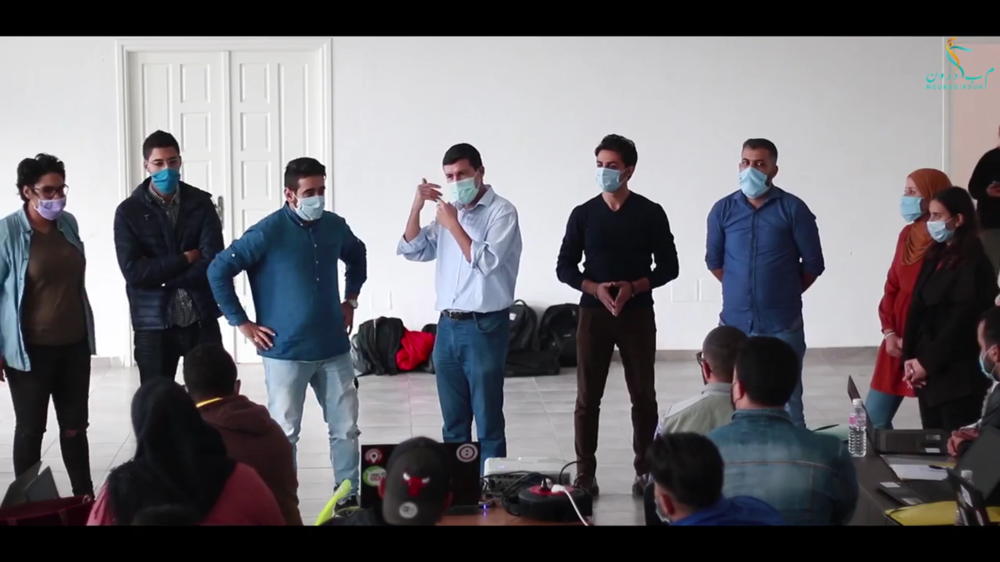

.JPG)
on est plus d'un centre de formation
Nous sommes un réseau de fabriques numériques et inclusives en France et à l’étranger. Nous avons formé gratuitement près de 10 000 apprenants depuis 2013, dont 39% de femmes et 54% de personnes peu ou pas diplômées. Nous sommes une entreprise sociale et solidaire qui entend faire du numérique un véritable levier d’inclusion pour révéler des talents différents peu représentés dans le digital et les métiers techniques du numérique. Nous accompagnons les organisations pour que leur transformation digitale reste inclusive, et nous construisons pour elles des sites et des applications performantes et responsables. De manière indirecte, nous agissons également dans le domaine de la médiation numérique et de l'apprentissage du numérique créatif auprès des enfants.

Simplon.co est un réseau de Fabriques solidaires et inclusives qui proposent des formations gratuites aux métiers techniques du numérique en France et à l’étranger
.JPG)
Simplon.co est un réseau de Fabriques solidaires et inclusives qui proposent des formations gratuites aux métiers techniques du numérique en France et à l’étranger
Simplon.co est un réseau de Fabriques solidaires et inclusives qui proposent des formations gratuites aux métiers techniques du numérique en France et à l’étranger